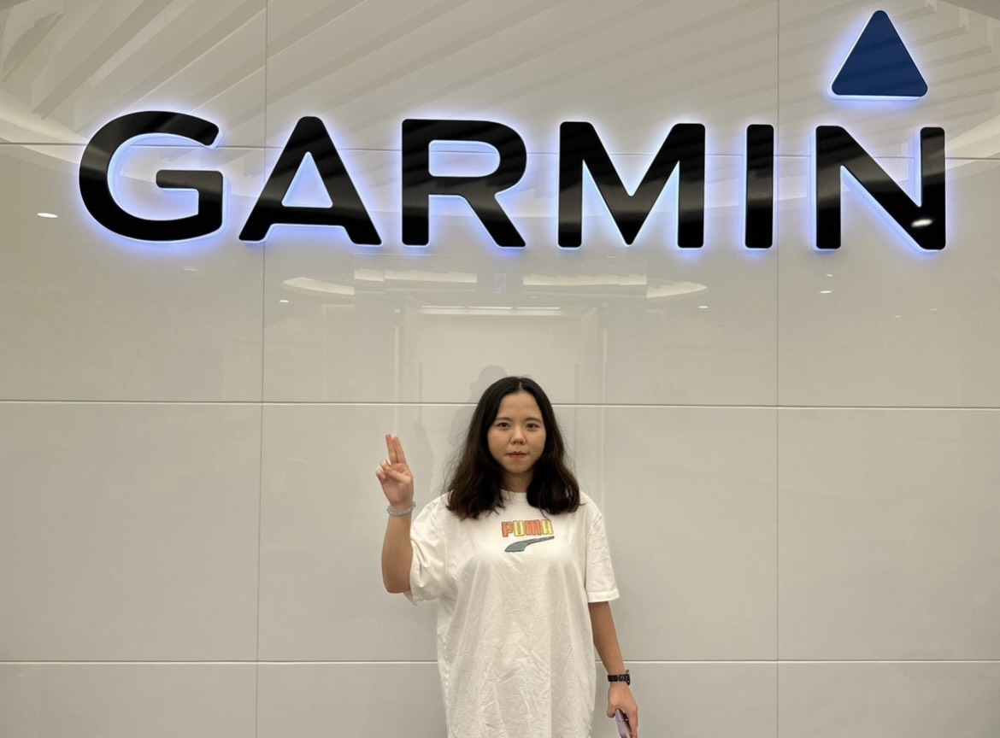
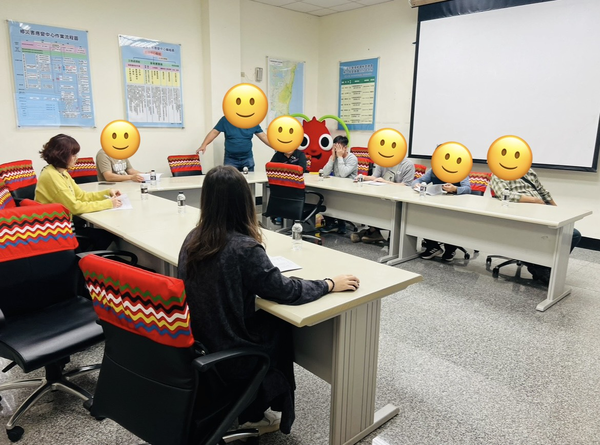
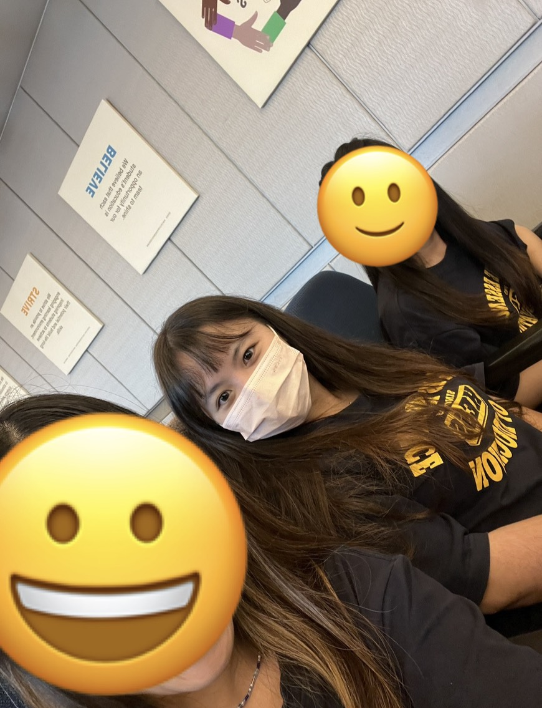
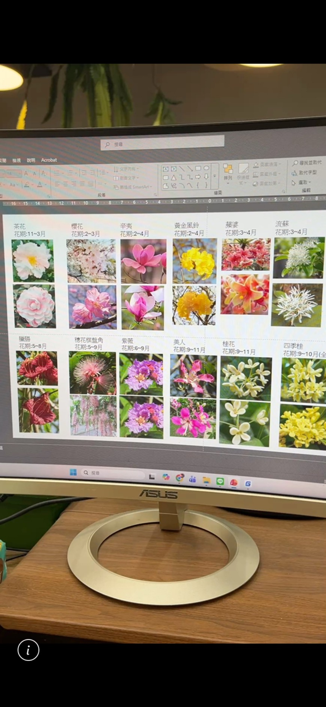

| 2022.07~2023.06 | Garmin_AutoOEMSystem Vaildation Support |
| Inter |
工作內容 |
 |
|
學習技能軟體功能驗證、需求理解、異常分析、Log判讀、問題追蹤、跨部門溝通 |
| 2023.08~2024.06 | 方達科技股份有限公司 |
| 專案管理、活動企劃 |
工作內容 |
 |
|
學習技能專案執行、進度控管、需求分析、報告撰寫、溝通協調、問題解決 |
| 2024.07~2025.06 | 何嘉仁文理補習班 |
| 安親老師 |
工作內容 |
 |
|
學習技能班級經營、親師溝通、臨場應變、耐心引導、溝通表達、觀察分析、團隊合作、情緒管理、問題處理 |
| 2025.09~2026.04 | 大漢設計工程有限公司 |
| 景觀設計助理 |
工作內容 |
 |
|
學習技能AutoCAD製圖、Photoshop彩圖、設計簡報、景觀製圖、剖面繪製、綠覆計算、燈具配置、排水規劃 |